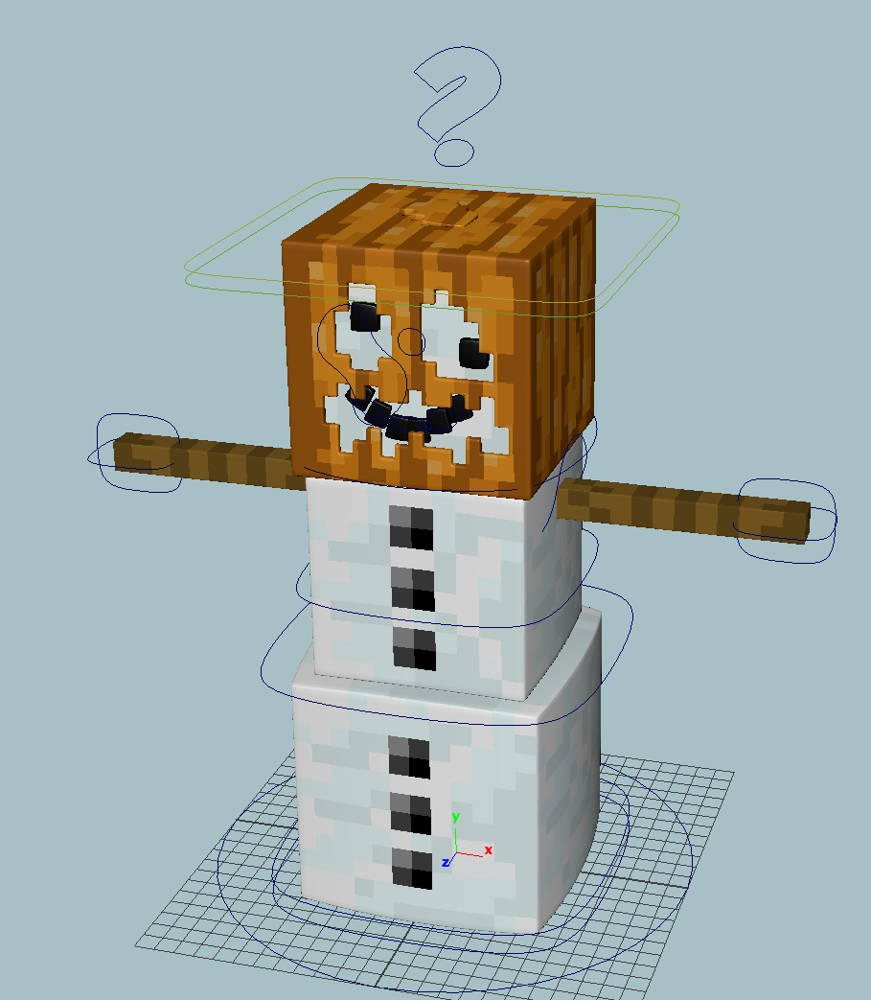
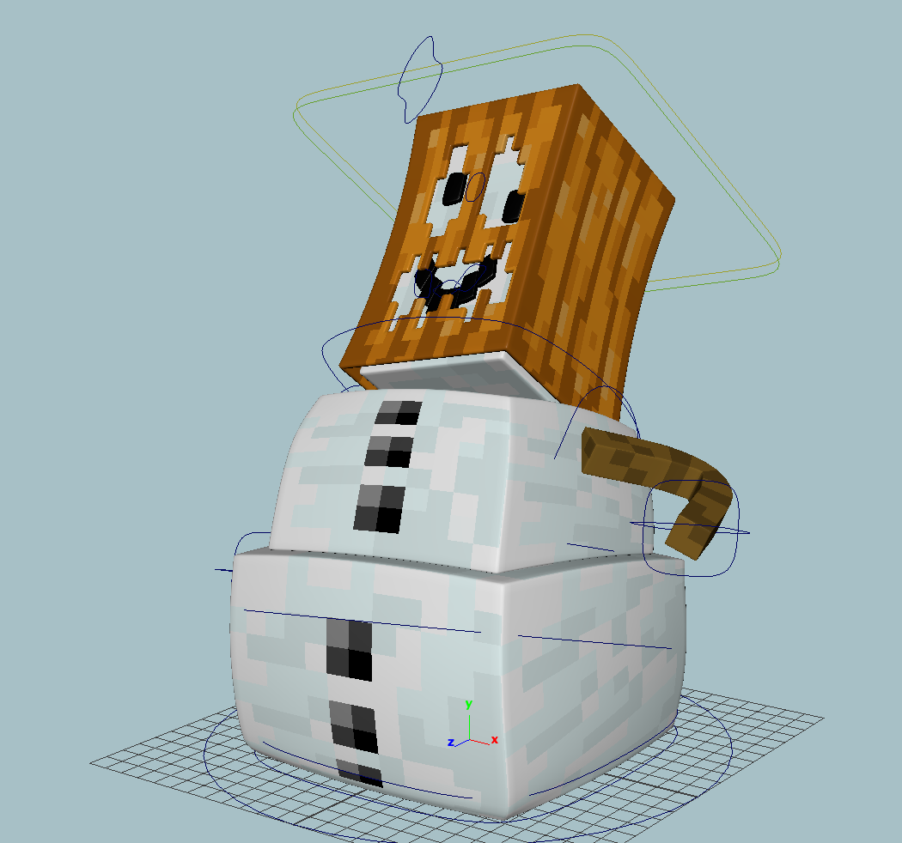

[rig name] by Ravbug Animations
Youtube: https://www.youtube.com/ravbuganimations
You will need to re-link the textures for the rigs. If you want my rigs to just work, place the textures inside your project in the following directory structure:
sourceimages/images for textures/minecraft textures/textures-new/
Or you can manually link them. Check out this page for information about how to extract the textures from Minecraft.
Wolf Rig
The star in my only animation series (that has only 2 episodes) See this version in action in the second episode!Features:
- IK driven smooth bending legs
- Stretch controls for legs
- Automatic positioning of body (set Auto Move Floor Offset in the Root controller to 1)
- Smooth bending body
- Multiple tail controls
- Smooth bending tail
- Teeth and smooth bending tongue
- Jaw controls
- 14 lip controls
- tilt controls for ears
- Eye dilation and position controls
- Top and bottom eyelids have full range and tilt
- Top and bottom eyelids have 3 fine-tuning controls for better emotion
Download Wolf Rig
Ocelot Rig
The co-star in my only animation series (that has only 2 episodes) See this version in action in the second episode!Features:
- Smooth bending body (2 controllers)
- Tail controls
- IK driven smooth bending legs
- Stretch controls for legs
- Pinwheel feet mode for all 4 legs
- Eye dilation controls
- Eye positions controls
- Top and bottom eyelids tilt and have maximum range
- 3 additional controls per eyelid for extra emotion control
Download Ocelot Rig
Horse Rig
Features:- IK driven legs
- Fancy feet (with IK controls as guides)
- 6 body bending controls
- Smooth bending neck
- Tail controls
- Jaw controls
- Blank inventory panel
- Toggle-able saddle
- Eye controls
- Eyelid controls
- Separate Floor control
Download Horse rig
Rabbit Rig
The product of an abandoned project.Features:
- Buck Teeth
- IK/FK switch on the front legs
- Stretch control on front legs
- Smooth bends on the front and back legs
- Smooth bending body with 2 controls
- Advanced mouth system with 16 linear controls for fine tuning
- Mouth location control (which also resizes to match current mouth state)
- Eyelids have full range, and tilt
- 3 fine-tuning controls per eyelid for extra contro
- Smooth bending ears
- Eye position controls
Download Rabbit rig
Iron Golem Rig
A more advanced version of the rig I used in How to Kill a VillagerFeatures:
- IK arms and legs
- 3 articulating fingers per arm
- Extruded vines
- Eye position controls
- Glowing eyes
- Eyebrow position, rotation, fine-tune
Download Iron Golem rig
Snow Golem Rig
Features:- Flexible arms
- Body articulation
Download Snow Golem Rig
Guruith's Snow Golem Rig
Guruith made a fantastic snow golem rig! His is much more capable than mine. Below are 2 screenshots of the rig. He used it in "Chilly"Tweet announcing the rig, also where the download link is
 
Chicken Rig
Falls in the category of "Rigs I thought I would use but never did".Features:
- IK legs (that bend the correct direction)
- Fancy feet
- Wing controls
- Open-able beak
- Tongue
- Body-rotate control
- Eyes are separate polygons
Download Chicken Rig
Sheep Rig
A basic sheep rig.Features:
- IK legs
- Body Allrotate control
- Head controls
- Eye position controls
- Wool and no wool toggle
Download Sheep rig
Cow Rig
A basic cow rig.Features:
- IK legs
- Body Allrotate control
- Head controls
- Eye position controls
- Pose-able horns (use the top joints to stretch, the lower joints to rotate/position)
- Extruded nose
Download Cow rig
Squid Rig
Features:- Smooth bending head (deformer driven)
- 8 IK driven tentacles
- Eye position controller
Download Squid rig